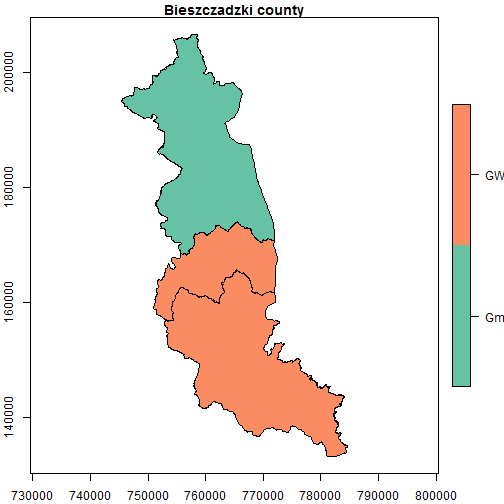
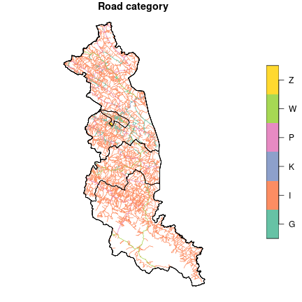
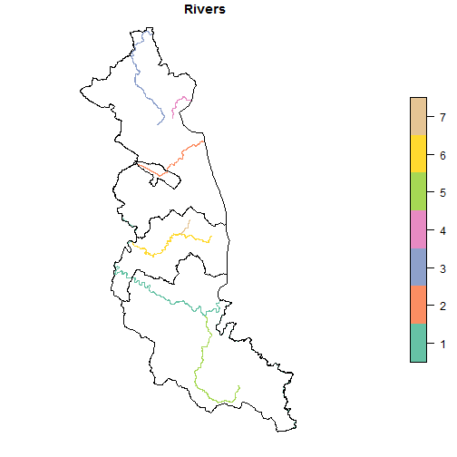
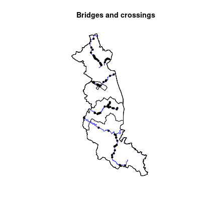
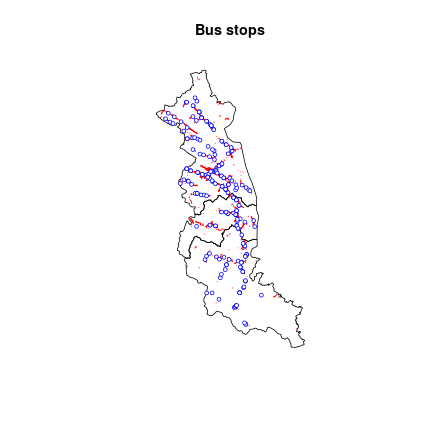

Definition
Topographic Database (pl. Baza Danych Obiektów Topograficznych) is a vector (object) database containing the spatial location of topographic objects with their characteristics for Poland. The content and detail of the database correspond to the topographic map in the scale 1:10000. The thematic scope includes information on water network, communication network, land cover, buildings and technical structures, utility infrastructure, land use, protected areas, territorial division units, and other objects. The database is available in the Geography Markup Language (GML) format. The source of its data comes from:
- other spatial databases maintained by Polish Head Office of Geodesy and Cartography (e.g. Register of Towns, Streets and Addresses, Register of Land and Buildings, State Register of Borders),
- databases maintained by other ministries or institutions (e.g., Ministry of Infrastructure, State Water Management, General Directorate for Environmental Protection),
- fieldworks.
Purpose
The purpose of this vignette is to perform spatial operations on vector data from the Topographic Database. We focus on four cases, taking into account different types of geometry, i.e. point, line, and polygon, and their attributes. Also, we show how they can be visualized.
Analysis
Our analysis area is the bieszczadzki county located in the Subcarpathian (podkarpackie) voivodeship. It is the farthest south area in Poland that also has the lowest population density (19 people on km2).
Database
We start by downloading the topographic database for our county using
the topodb_download() function.
# 22.4 MB
topodb_download("bieszczadzki", outdir = "./data")If you run into any problem with the download, remember that you can
pass another download method from download.file() as a
function argument.
topodb_download(req_df, outdir = "./data", method = "wget")The downloaded database consists of many files in the GML
format. All the data necessary for analyzes can be found in the
data/PL.PZGiK.332.1801/BDOT10k/ location. A brief
description of the structure of this database can be found here.
First, let’s load the file with administrative units
(“PL.PZGiK.332.1801__OT_ADJA_A.xml”) using the sf
package and its read_sf() function.
territory = read_sf("data/PL.PZGiK.332.1801/BDOT10k/PL.PZGiK.332.1801__OT_ADJA_A.xml")The file contains administrative units at various levels, let’s
choose the lowest level, i.e. communes. There are three types of
communes in this dataset, specified in the rodzaj column:
urban (GM), rural (GW), and urban-rural
(Gmw). Let’s select them.
##
## Gmw GW
## 1 2We can see that the bieszczadzki county consists of two rural communes and one urban-rural commune. Let’s visualize it.
plot(communes, axes = TRUE, main = "Bieszczadzki county")
Lengths and categories of roads
In the first task, we calculate the lengths of roads, taking into account their categories. Road data can be found in the “PL.PZGiK.332.1801__OT_SKDR_L.xml” file.
roads = read_sf("data/PL.PZGiK.332.1801/BDOT10k/PL.PZGiK.332.1801__OT_SKDR_L.xml")Let’s plot them. We use the plot() function again, but
this time we combine the two layers into one image. The first layer (in
the background) contains roads and to add another layer, we have to set
the argument reset to "FALSE". Then we can add
a second layer with the territory borders by setting the
add argument to "TRUE".
plot(roads["katZarzadzania"], main = "Road category", reset = FALSE)
plot(st_geometry(territory), add = TRUE)
We have six road categories related to the managing entity. Those are: national (K), voivodeship (W), county (P), communal (G), institutional (Z), and other (I) roads.
We use the st_length() function to find the length of
each object in the table. Next, we create a data frame consisting of the
road category and its length. Then we aggregate this data frame and
calculate the sum of the lengths for each category.
length_roads = st_length(roads)
length_roads = data.frame(length = length_roads,
class = as.factor(roads$katZarzadzania))
length_roads = aggregate(length ~ class, data = length_roads, FUN = sum)The results are given in meters - let’s convert them into kilometers.
# convert to [km]
length_roads$length = units::set_units(length_roads$length, "km")Let’s also change the names of the categories.
road_class = c("communal", "other", "national", "county", "voivodeship",
"institutional")
levels(length_roads$class) = road_classNow we can see the results. The other type of roads
dominates that consists mainly of non-public roads.
length_roads## class length
## 1 communal 186.17329 [km]
## 2 other 2819.55806 [km]
## 3 national 19.24996 [km]
## 4 county 187.17870 [km]
## 5 voivodeship 105.67567 [km]
## 6 institutional 10.44893 [km]We can also calculate the total length of the roads in this area.
sum(length_roads$length)## 3328.285 [km]The result is about 3328.285 km. Another aspect of the data that we can investigate is the density of the road network. We need to calculate the total area first, and then divide the total road length by the total area.
communes_area = sum(st_area(communes))
communes_area = units::set_units(communes_area, "km2")
density = sum(length_roads$length)/communes_area
density = units::set_units(density, "km/km2")
density## 2.921031 [km/km2]The road density is about 2.92 km/km2.
Roads through the rivers
Another dataset included in the Topographic Database contains rivers for this area (“PL.PZGiK.332.1801__OT_SWRS_L.xml”).
rivers = read_sf("data/PL.PZGiK.332.1801/BDOT10k/PL.PZGiK.332.1801__OT_SWRS_L.xml")
rivers = rivers[rivers$rodzaj == "Rz", ] # select only riversRivers are divided into smaller sections with different parameters,
such as river width or data source. Let’s merge sections from the same
rivers into a single feature (geometry) - we can use the attribute with
an ID (idMPHP) for that purpose. We can also give each
river a category number by creating a sequence from 1 to n using the
seq_len function.
rivers = aggregate(rivers[, c("geometry", "idMPHP")],
list(rivers$idMPHP),
sum)
rivers$idMPHP = seq_len(length(unique(rivers$idMPHP)))
rivers$idMPHP = as.factor(rivers$idMPHP)Let’s visualize the rivers’ courses.
plot(rivers["idMPHP"], main = "Rivers", reset = FALSE)
plot(st_geometry(territory), add = TRUE)
With rivers and roads, we can designate points of intersection that
symbolize bridges and crossings. We can use the
st_intersection() function for this.
bridges = st_geometry(st_intersection(rivers, roads))
length(bridges)## [1] 81We get 81 such points. Let’s plot them.
# use 'dev.off()' to reset previous plot
plot(st_geometry(rivers), main = "Bridges and crossings", col = "blue")
plot(st_geometry(territory), add = TRUE)
plot(bridges, add = TRUE, pch = 20)
Land cover
Land cover is the physical material at the surface of the earth like
grass, trees, bare ground, water, etc. Let’s check the land cover data
for our county - it is stored in files with the PT prefix.
We use the list.files() function to list them. The
pattern argument is important here because it determines
what files should be selected. Our pattern should look like
this: PT+.+A\\.xml$ - only files containing areal data (A)
of land cover (PT) will be listed.
files = list.files("data/PL.PZGiK.332.1801/BDOT10k",
pattern = "PT+.+A\\.xml$",
full.names = TRUE)
# print filenames
basename(files)## [1] "PL.PZGiK.332.1801__OT_PTGN_A.xml"
## [2] "PL.PZGiK.332.1801__OT_PTKM_A.xml"
## [3] "PL.PZGiK.332.1801__OT_PTLZ_A.xml"
## [4] "PL.PZGiK.332.1801__OT_PTNZ_A.xml"
## [5] "PL.PZGiK.332.1801__OT_PTPL_A.xml"
## [6] "PL.PZGiK.332.1801__OT_PTRK_A.xml"
## [7] "PL.PZGiK.332.1801__OT_PTSO_A.xml"
## [8] "PL.PZGiK.332.1801__OT_PTTR_A.xml"
## [9] "PL.PZGiK.332.1801__OT_PTUT_A.xml"
## [10] "PL.PZGiK.332.1801__OT_PTWP_A.xml"
## [11] "PL.PZGiK.332.1801__OT_PTWZ_A.xml"
## [12] "PL.PZGiK.332.1801__OT_PTZB_A.xml"We also can exclude “PL.PZGiK.332.1801__OT_PTSO_A.xml” file from the list, because this file contains zero objects (features).
# drop "OT_PTSO_A.xml"
files = files[-7]Let’s prepare the names of the objects to which the data will be loaded. The following names are the extended names of the abbreviations stored in the filenames.
layer_names = c("fallowlands", "communication", "forest", "undeveloped",
"squares", "shrublands", "crops", "grassland",
"water", "heaps", "buildings")Now we load each GML file, naming it from the list above. Instead of
using a loop, we can use the lapply() function, which
performs a specific action for each element of the vector. The action in
our case is to load the GML files using read_sf().
Previously, we used st_length() to calculate the line
length, now we use corresponding st_area() function to
calculate the area. Here we use the lapply() function
analogously, which will work for each item on the list. A similar
function is sapply(), which returns a vector instead of a
list.
# calculate areas in each layer
area_landcover = lapply(layers, st_area)
# sum areas for each layer
area_landcover = sapply(area_landcover, sum)
# convert units
area_landcover = units::set_units(area_landcover, "m^2")
area_landcover = units::set_units(area_landcover, "km^2")
names(area_landcover) = layer_namesLet’s see the results (in kilometers).
area_landcover## Units: [km^2]
## fallowlands communication forest undeveloped squares
## 0.07561383 1.97014481 860.17248134 0.27817715 0.29038385
## shrublands crops grassland water heaps
## 1.57266555 255.13528884 0.63447491 8.81181550 0.09220115
## buildings
## 10.38781092Let’s make sure that the total land cover is equal to the area of our
county. Some tiny precision differences are possible, so we should set
the difference tolerance. This is possible using the
all.equal() function.
## [1] TRUEEverything is correct. Let’s present the results as percentages of the area and sort them in descending order.
landcover_percentage = area_landcover / sum(area_landcover) * 100
units(landcover_percentage) = NULL # drop units
landcover_percentage = sort(landcover_percentage, decreasing = TRUE)
landcover_percentage = round(landcover_percentage, 2)
landcover_percentage## forest crops buildings water communication
## 75.49 22.39 0.91 0.77 0.17
## shrublands grassland squares undeveloped heaps
## 0.14 0.06 0.03 0.02 0.01
## fallowlands
## 0.01Over 75% of the county’s area is covered by forests and only less than 1% by buildings.
Buffer
In the last analysis in this vignette, we want to check how many
buildings have bus stops within a given distance. We can apply spatial
buffers to solve this question. Information about bus stops is in the
“PL.PZGiK.332.1801__OT_OIKM_P.xml” file, where they are represented by
the OIKM04 value of the x_kod attribute.
bus_stop = read_sf("data/PL.PZGiK.332.1801/BDOT10k/PL.PZGiK.332.1801__OT_OIKM_P.xml")
bus_stop = bus_stop[bus_stop$x_kod == "OIKM04", ]Let’s prepare a visualization in which the bus stops are marked with blue dots and the buildings are presented as red polygons.
buildings = layers$buildings
plot(st_geometry(communes), main = "Bus stops")
plot(st_geometry(layers$buildings), add = TRUE, border = "red")
plot(st_geometry(bus_stop), add = TRUE, pch = 20, cex = 0.7, col = "blue")
Let’s create a buffer for each bus stop with a range of 1 km using
st_buffer().
bus_buffer = st_buffer(bus_stop, 1000)Now, we can plot it all.
plot(st_geometry(communes), main = "Bus stops buffers")
plot(st_geometry(buildings), add = TRUE, border = "red")
plot(st_geometry(bus_buffer), add = TRUE)
To return the buildings within the buffer range, we can perform the
st_within() operation.
buildings_buffer = st_within(buildings, bus_buffer)The result is a nested list that consists of 2828 buildings and their
associated buffers. Let’s count how many buildings are not in any buffer
by using sapply() as in the previous examples.
buildings_ex = sapply(buildings_buffer, length)
buildings_ex = sum(buildings_ex == 0)
buildings_ex = round(buildings_ex / nrow(buildings) * 100)
buildings_ex## [1] 14Answer to our last question: 14% of the buildings in this county do not have access to a bus stop within a 1 km radius.